<!DOCTYPE html>
<html lang="en">
  <head>
    <meta charset="utf-8" />
    <meta name="viewport" content="width=device-width, initial-scale=1.0, maximum-scale=1.0, user-scalable=no" />

    <title></title>
    <link rel="stylesheet" href="dist/reveal.css" />
    <link rel="stylesheet" href="dist/theme/iph.css" id="theme" />
    <link rel="stylesheet" href="plugin/highlight/spyder.css" />
	<link rel="stylesheet" href="css/layout.css" />
	<link rel="stylesheet" href="plugin/customcontrols/style.css">


    <script defer src="dist/fontawesome/all.min.js"></script>

	<script type="text/javascript">
		var forgetPop = true;
		function onPopState(event) {
			if(forgetPop){
				forgetPop = false;
			} else {
				parent.postMessage(event.target.location.href, "app://obsidian.md");
			}
        }
		window.onpopstate = onPopState;
		window.onmessage = event => {
			if(event.data == "reload"){
				window.document.location.reload();
			}
			forgetPop = true;
		}

		function fitElements(){
			const itemsToFit = document.getElementsByClassName('fitText');
			for (const item in itemsToFit) {
				if (Object.hasOwnProperty.call(itemsToFit, item)) {
					var element = itemsToFit[item];
					fitElement(element,1, 1000);
					element.classList.remove('fitText');
				}
			}
		}

		function fitElement(element, start, end){

			let size = (end + start) / 2;
			element.style.fontSize = `${size}px`;

			if(Math.abs(start - end) < 1){
				while(element.scrollHeight > element.offsetHeight){
					size--;
					element.style.fontSize = `${size}px`;
				}
				return;
			}

			if(element.scrollHeight > element.offsetHeight){
				fitElement(element, start, size);
			} else {
				fitElement(element, size, end);
			}		
		}


		document.onreadystatechange = () => {
			fitElements();
			if (document.readyState === 'complete') {
				if (window.location.href.indexOf("?export") != -1){
					parent.postMessage(event.target.location.href, "app://obsidian.md");
				}
				if (window.location.href.indexOf("print-pdf") != -1){
					let stateCheck = setInterval(() => {
						clearInterval(stateCheck);
						window.print();
					}, 250);
				}
			}
	};


        </script>
  </head>
  <body>
    <div class="reveal">
      <div class="slides"><section  data-markdown><script type="text/template"><!-- .slide: class="has-light-background drop" data-background-color="#f8f8f8" -->
<div class="" style="position: absolute; left: 0px; top: 0px; height: 700px; width: 960px; min-height: 700px; display: flex; flex-direction: column; align-items: center; justify-content: center" absolute="true">

### Estructuras de Datos y Algoritmos

#### *Pilas y colas*

[Eduardo Rosales](mailto:ee.rosales24@uniandes.edu.co)

Departamento de Ingeniería de Sistemas y Computación

Universidad de los Andes
</div></script></section><section  data-markdown><script type="text/template"><!-- .slide: class="has-light-background drop" data-background-color="#f8f8f8" -->
<div class="" style="position: absolute; left: 0px; top: 0px; height: 700px; width: 960px; min-height: 700px; display: flex; flex-direction: column; align-items: center; justify-content: center" absolute="true">

### Pila (Stack) (1/2)

- Estructura de datos con comportamiento LIFO
	- Último en entrar, primero en salir (Last In, First Out)


</div></script></section><section  data-markdown><script type="text/template"><!-- .slide: class="has-light-background drop" data-background-color="#f8f8f8" -->
<div class="" style="position: absolute; left: 0px; top: 0px; height: 700px; width: 960px; min-height: 700px; display: flex; flex-direction: column; align-items: center; justify-content: center" absolute="true">

### Pila (Stack) (2/2)

- Principales operaciones:​
	- **Push**​:
		- Añade un elemento al tope​
	- **Pop**:
		- Remueve y retorna elemento del tope
	- **Top**:
		- Consulta el elemento del tope


</div></script></section><section  data-markdown><script type="text/template"><!-- .slide: class="has-light-background drop" data-background-color="#f8f8f8" -->
<div class="" style="position: absolute; left: 0px; top: 0px; height: 700px; width: 960px; min-height: 700px; display: flex; flex-direction: column; align-items: center; justify-content: center" absolute="true">

### `push()`

- Añade un elemento al tope​

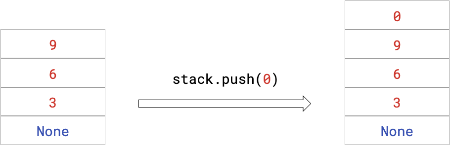
</div></script></section><section  data-markdown><script type="text/template"><!-- .slide: class="has-light-background drop" data-background-color="#f8f8f8" -->
<div class="" style="position: absolute; left: 0px; top: 0px; height: 700px; width: 960px; min-height: 700px; display: flex; flex-direction: column; align-items: center; justify-content: center" absolute="true">

### `pop()`

-  Remueve y retorna elemento del tope

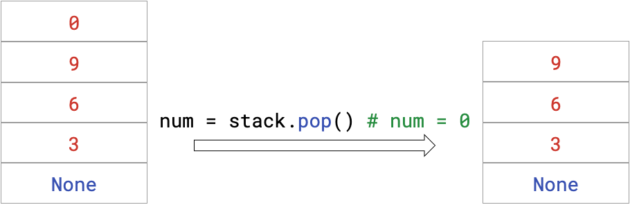
</div></script></section><section  data-markdown><script type="text/template"><!-- .slide: class="has-light-background drop" data-background-color="#f8f8f8" -->
<div class="" style="position: absolute; left: 0px; top: 0px; height: 700px; width: 960px; min-height: 700px; display: flex; flex-direction: column; align-items: center; justify-content: center" absolute="true">

### `top()`

- Consulta el elemento del tope
	- Sin removerlo

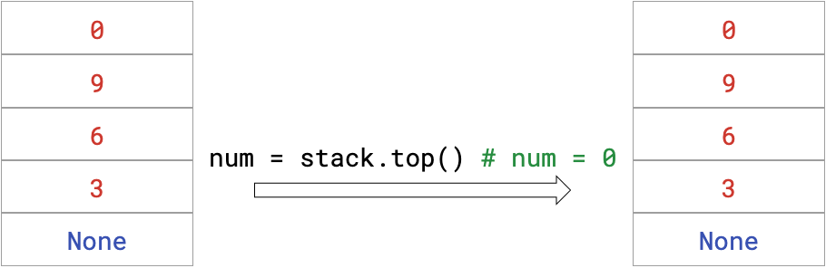
</div></script></section><section  data-markdown><script type="text/template"><!-- .slide: class="has-light-background drop" data-background-color="#f8f8f8" -->
<div class="" style="position: absolute; left: 0px; top: 0px; height: 700px; width: 960px; min-height: 700px; display: flex; flex-direction: column; align-items: center; justify-content: center" absolute="true">

### Ejemplos de pilas (1/2)

- Historial de navegación en navegadores Web
    
    - Se usa una pila para almacenar las direcciones de los sitios visitados
    - Cada nuevo sitio se hace incluye en la pila
    - El botón "atrás" permite consultar sitios previos en la pila
</div></script></section><section  data-markdown><script type="text/template"><!-- .slide: class="has-light-background drop" data-background-color="#f8f8f8" -->
<div class="" style="position: absolute; left: 0px; top: 0px; height: 700px; width: 960px; min-height: 700px; display: flex; flex-direction: column; align-items: center; justify-content: center" absolute="true">

### Ejemplos de pilas (2/2)

- Función de "deshacer" en editores de texto
    
    - Las acciones de edición se almacenan en una pila
    - Al presionar "deshacer", se revierte la última acción tomada
    - Se pueden recuperar estados previos del documento en orden inverso
</div></script></section><section  data-markdown><script type="text/template"><!-- .slide: class="has-light-background drop" data-background-color="#f8f8f8" -->
<div class="" style="position: absolute; left: 0px; top: 0px; height: 700px; width: 960px; min-height: 700px; display: flex; flex-direction: column; align-items: center; justify-content: center" absolute="true">

### List – API


- **TODO**
		- Revisar la [documentación de Stack](https://isis1225devs.github.io/ISIS1225-Structure-Documentation/DataStructures.Stack.html)
</div></script></section><section  data-markdown><script type="text/template"><!-- .slide: class="has-light-background drop" data-background-color="#f8f8f8" -->
<div class="" style="position: absolute; left: 0px; top: 0px; height: 700px; width: 960px; min-height: 700px; display: flex; flex-direction: column; align-items: center; justify-content: center" absolute="true">

### El TAD Pila

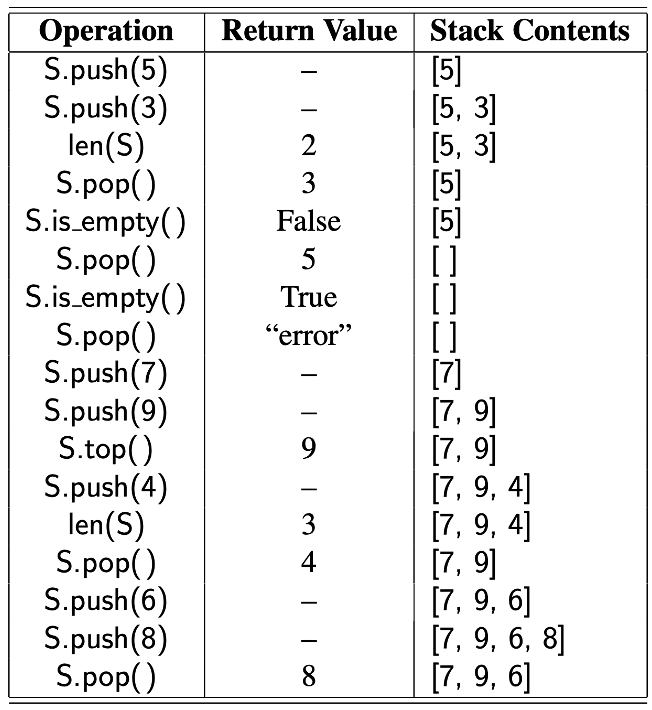
</div></script></section><section  data-markdown><script type="text/template"><!-- .slide: class="has-light-background drop" data-background-color="#f8f8f8" -->
<div class="" style="position: absolute; left: 0px; top: 0px; height: 700px; width: 960px; min-height: 700px; display: flex; flex-direction: column; align-items: center; justify-content: center" absolute="true">

### Implementación de una Pila en Python - Usando una Lista
</div></script></section><section  data-markdown><script type="text/template"><!-- .slide: class="has-light-background drop" data-background-color="#f8f8f8" -->
<div class="" style="position: absolute; left: 0px; top: 0px; height: 700px; width: 960px; min-height: 700px; display: flex; flex-direction: column; align-items: center; justify-content: center" absolute="true">

### ¿Cuál sería la complejidad temporal de cada operación?

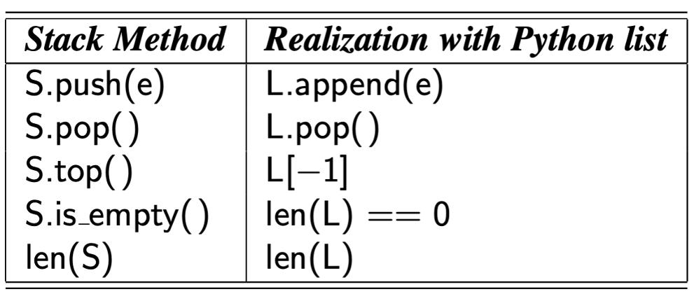
</div></script></section><section  data-markdown><script type="text/template"><!-- .slide: class="has-light-background drop" data-background-color="#f8f8f8" -->
<div class="" style="position: absolute; left: 0px; top: 0px; height: 700px; width: 960px; min-height: 700px; display: flex; flex-direction: column; align-items: center; justify-content: center" absolute="true">

### `push()`

- Agregar al final de una lista (no hay desplazamiento)
	- En una lista de Python es una operación constante - O(1)


</div></script></section><section  data-markdown><script type="text/template"><!-- .slide: class="has-light-background drop" data-background-color="#f8f8f8" -->
<div class="" style="position: absolute; left: 0px; top: 0px; height: 700px; width: 960px; min-height: 700px; display: flex; flex-direction: column; align-items: center; justify-content: center" absolute="true">

### `pop()`

- Eliminar al final de una lista (no hay desplazamiento)
	- En una lista de Python es una operación constante - O(1)


</div></script></section><section  data-markdown><script type="text/template"><!-- .slide: class="has-light-background drop" data-background-color="#f8f8f8" -->
<div class="" style="position: absolute; left: 0px; top: 0px; height: 700px; width: 960px; min-height: 700px; display: flex; flex-direction: column; align-items: center; justify-content: center" absolute="true">

### `top()`

- Acceso al final de una lista (no hay desplazamiento)
	- En una lista de Python es una operación constante - O(1)


</div></script></section><section  data-markdown><script type="text/template"><!-- .slide: class="has-light-background drop" data-background-color="#f8f8f8" -->
<div class="" style="position: absolute; left: 0px; top: 0px; height: 700px; width: 960px; min-height: 700px; display: flex; flex-direction: column; align-items: center; justify-content: center" absolute="true">

### `is_empty()`

- `len()` opera en tiempo constante - O(1)
- Una comparación es una operación constante - O(1)


</div></script></section><section  data-markdown><script type="text/template"><!-- .slide: class="has-light-background drop" data-background-color="#f8f8f8" -->
<div class="" style="position: absolute; left: 0px; top: 0px; height: 700px; width: 960px; min-height: 700px; display: flex; flex-direction: column; align-items: center; justify-content: center" absolute="true">

### `size()`

- `len()` opera en tiempo constante - O(1)


<!-- .slide: class="has-light-background" data-background-color="#f8f8f8" -->
</div></script></section><section  data-markdown><script type="text/template"><!-- .slide: class="has-light-background drop" data-background-color="#f8f8f8" -->
<div class="" style="position: absolute; left: 0px; top: 0px; height: 700px; width: 960px; min-height: 700px; display: flex; flex-direction: column; align-items: center; justify-content: center" absolute="true">

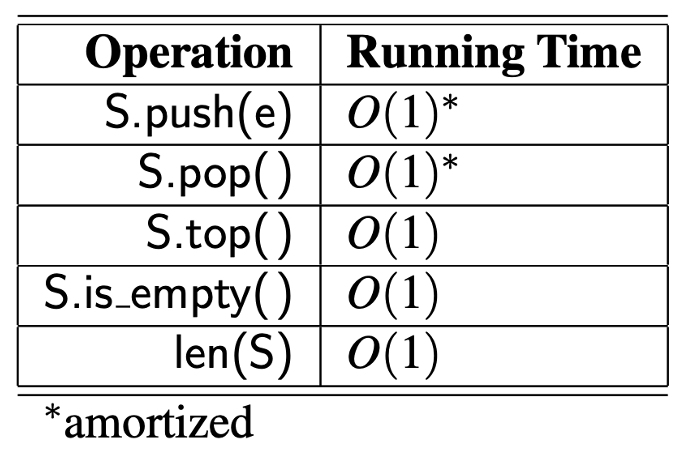


\* Amortizado:
- El costo de push (`list.append()`) puede ser O(n) ocasionalmente
</div></script></section><section  data-markdown><script type="text/template"><!-- .slide: class="has-light-background drop" data-background-color="#f8f8f8" -->
<div class="" style="position: absolute; left: 0px; top: 0px; height: 700px; width: 960px; min-height: 700px; display: flex; flex-direction: column; align-items: center; justify-content: center" absolute="true">

### Cola (Queue) (1/2)

- Estructura de datos con comportamiento FIFO
	- Primero en entrar, primero en salir (First In, First Out)

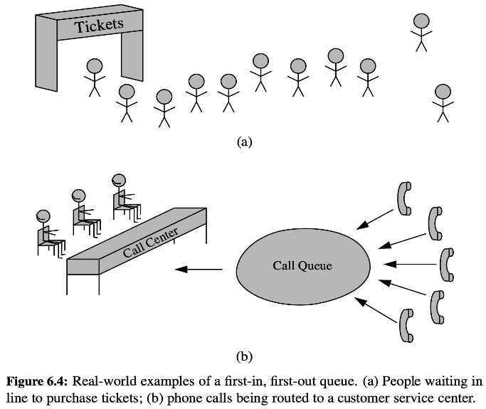
</div></script></section><section  data-markdown><script type="text/template"><!-- .slide: class="has-light-background drop" data-background-color="#f8f8f8" -->
<div class="" style="position: absolute; left: 0px; top: 0px; height: 700px; width: 960px; min-height: 700px; display: flex; flex-direction: column; align-items: center; justify-content: center" absolute="true">

### Cola (Queue) (2/2)

- Principales operaciones:​
	- **Enqueue**:
		- Añade un elemento al final
	- **Dequeue**:
		- Remueve y retorna elemento del frente
	- **Peek**:
		- Consulta y retorna elemento del frente
</div></script></section><section  data-markdown><script type="text/template"><!-- .slide: class="has-light-background drop" data-background-color="#f8f8f8" -->
<div class="" style="position: absolute; left: 0px; top: 0px; height: 700px; width: 960px; min-height: 700px; display: flex; flex-direction: column; align-items: center; justify-content: center" absolute="true">

### Enqueue

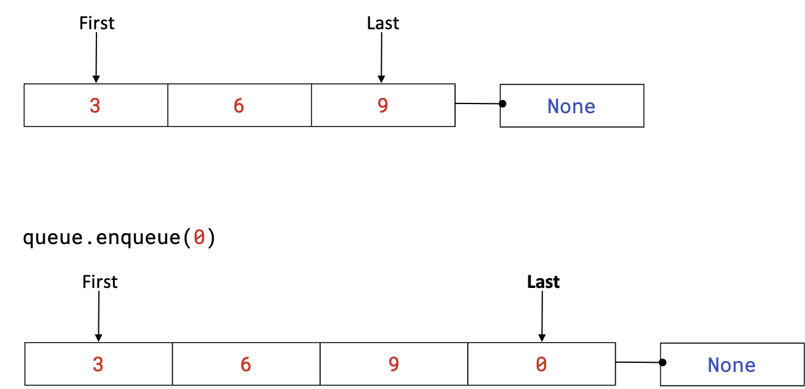
</div></script></section><section  data-markdown><script type="text/template"><!-- .slide: class="has-light-background drop" data-background-color="#f8f8f8" -->
<div class="" style="position: absolute; left: 0px; top: 0px; height: 700px; width: 960px; min-height: 700px; display: flex; flex-direction: column; align-items: center; justify-content: center" absolute="true">

### Dequeue

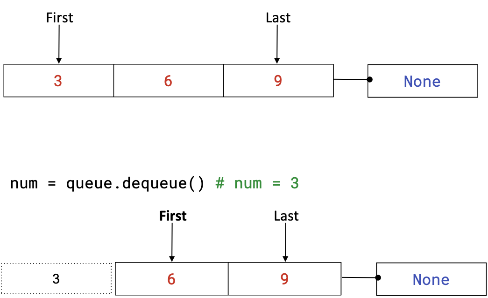
</div></script></section><section  data-markdown><script type="text/template"><!-- .slide: class="has-light-background drop" data-background-color="#f8f8f8" -->
<div class="" style="position: absolute; left: 0px; top: 0px; height: 700px; width: 960px; min-height: 700px; display: flex; flex-direction: column; align-items: center; justify-content: center" absolute="true">

### Peek

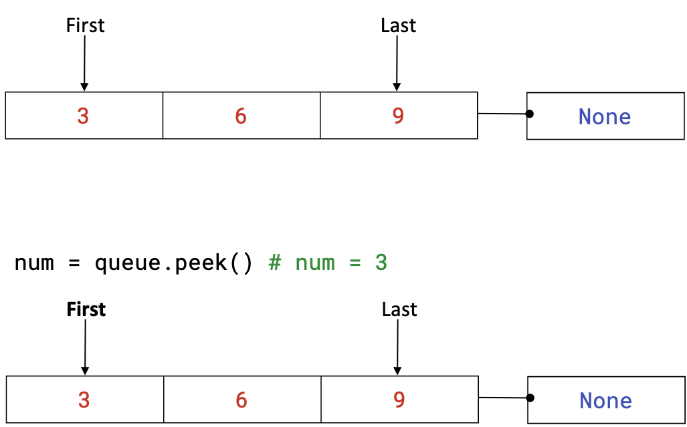
</div></script></section><section  data-markdown><script type="text/template"><!-- .slide: class="has-light-background drop" data-background-color="#f8f8f8" -->
<div class="" style="position: absolute; left: 0px; top: 0px; height: 700px; width: 960px; min-height: 700px; display: flex; flex-direction: column; align-items: center; justify-content: center" absolute="true">

### Ejemplos de colas (1/2)

- Impresión de documentos en una impresora
    
    - Los documentos enviados a imprimir se encolan en un pool de impresión
    - Se procesan en orden de llegada (FIFO: First In, First Out)
    - Los documentos se imprimen uno por uno hasta que la cola queda vacía
</div></script></section><section  data-markdown><script type="text/template"><!-- .slide: class="has-light-background drop" data-background-color="#f8f8f8" -->
<div class="" style="position: absolute; left: 0px; top: 0px; height: 700px; width: 960px; min-height: 700px; display: flex; flex-direction: column; align-items: center; justify-content: center" absolute="true">

### Ejemplos de colas (2/2)

- Atención en un centro de llamadas
    
    - Las llamadas de los clientes se encolan en un sistema de espera
    - Se atienden en el orden en que fueron recibidas (FIFO)
    - Los agentes atienden a los clientes de la cola a medida que quedan disponibles
</div></script></section><section  data-markdown><script type="text/template"><!-- .slide: class="has-light-background drop" data-background-color="#f8f8f8" -->
<div class="" style="position: absolute; left: 0px; top: 0px; height: 700px; width: 960px; min-height: 700px; display: flex; flex-direction: column; align-items: center; justify-content: center" absolute="true">

### List – API


- **TODO**
		- Revisar la [documentación de Queue](https://isis1225devs.github.io/ISIS1225-Structure-Documentation/DataStructures.Queue.html)
</div></script></section><section  data-markdown><script type="text/template"><!-- .slide: class="has-light-background drop" data-background-color="#f8f8f8" -->
<div class="" style="position: absolute; left: 0px; top: 0px; height: 700px; width: 960px; min-height: 700px; display: flex; flex-direction: column; align-items: center; justify-content: center" absolute="true">

### El TAD Cola

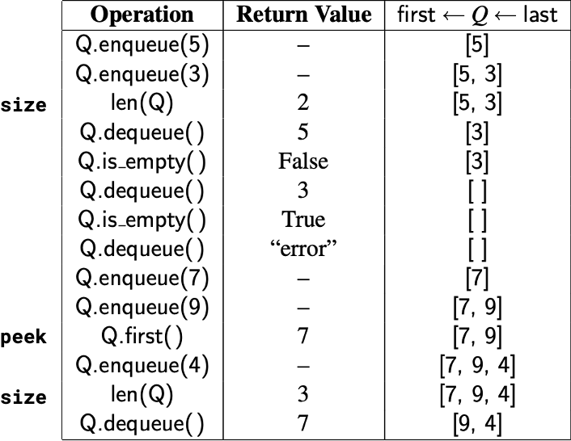
</div></script></section><section  data-markdown><script type="text/template"><!-- .slide: class="has-light-background drop" data-background-color="#f8f8f8" -->
<div class="" style="position: absolute; left: 0px; top: 0px; height: 700px; width: 960px; min-height: 700px; display: flex; flex-direction: column; align-items: center; justify-content: center" absolute="true">

### Implementación de una Cola en Python - Usando una Lista
</div></script></section><section  data-markdown><script type="text/template"><!-- .slide: class="has-light-background drop" data-background-color="#f8f8f8" -->
<div class="" style="position: absolute; left: 0px; top: 0px; height: 700px; width: 960px; min-height: 700px; display: flex; flex-direction: column; align-items: center; justify-content: center" absolute="true">

### `enqueue()`

- Agregar al final de una lista (`list.append()`)
    - En una lista de Python es una operación constante - O(1)
</div></script></section><section  data-markdown><script type="text/template"><!-- .slide: class="has-light-background drop" data-background-color="#f8f8f8" -->
<div class="" style="position: absolute; left: 0px; top: 0px; height: 700px; width: 960px; min-height: 700px; display: flex; flex-direction: column; align-items: center; justify-content: center" absolute="true">

### `peek()`

- Acceso al inicio de una lista (`lista[0]`)
    - En una lista de Python es una operación constante - O(1)
</div></script></section><section  data-markdown><script type="text/template"><!-- .slide: class="has-light-background drop" data-background-color="#f8f8f8" -->
<div class="" style="position: absolute; left: 0px; top: 0px; height: 700px; width: 960px; min-height: 700px; display: flex; flex-direction: column; align-items: center; justify-content: center" absolute="true">

## `is_empty()`

- `len()` opera en tiempo constante - O(1)
    
- Una comparación es una operación constante - O(1)
</div></script></section><section  data-markdown><script type="text/template"><!-- .slide: class="has-light-background drop" data-background-color="#f8f8f8" -->
<div class="" style="position: absolute; left: 0px; top: 0px; height: 700px; width: 960px; min-height: 700px; display: flex; flex-direction: column; align-items: center; justify-content: center" absolute="true">

### `size()`

- `len()` opera en tiempo constante - O(1)
</div></script></section><section  data-markdown><script type="text/template"><!-- .slide: class="has-light-background drop" data-background-color="#f8f8f8" -->
<div class="" style="position: absolute; left: 0px; top: 0px; height: 700px; width: 960px; min-height: 700px; display: flex; flex-direction: column; align-items: center; justify-content: center" absolute="true">

### `dequeue()`

- Eliminar al inicio de una lista:

```python
pop(0)

del lista[0]
```
    
- Se requiere desplazar todos los elementos
	
 ❌ En una lista de Python es una operación lineal - O(n)
</div></script></section><section  data-markdown><script type="text/template"><!-- .slide: class="has-light-background drop" data-background-color="#f8f8f8" -->
<div class="" style="position: absolute; left: 0px; top: 0px; height: 700px; width: 960px; min-height: 700px; display: flex; flex-direction: column; align-items: center; justify-content: center" absolute="true">

### Implementación de una pila
</div></script></section><section  data-markdown><script type="text/template"><!-- .slide: class="has-light-background drop" data-background-color="#f8f8f8" -->
<div class="" style="position: absolute; left: 0px; top: 0px; height: 700px; width: 960px; min-height: 700px; display: flex; flex-direction: column; align-items: center; justify-content: center" absolute="true">

###  Implementación de una pila usando un arreglo (1/2)

- Sea `array_list` 
	- La implementación de un arreglo
- Sea `arr` 
	- El alias usado para importar esa implementación
	
<br>

- Se asume que `array_list` soporta las siguiente operaciones:
<html lang="es"> <head> <meta charset="UTF-8"> <meta name="viewport" content="width=device-width, initial-scale=1.0"> <title>Tabla de Estructuras de Datos</title> <style> table { width: 100%; border-collapse: collapse; } th { border: 2px solid black; padding: 10px; text-align: center; background-color: #D7ECFC; /* Fondo azul claro para encabezados */ font-weight: bold; font-size: 18px; } td { border-left: 2px solid black; border-right: 2px solid black; border-top: 2px solid black; padding: 10px; text-align: center; background-color: white; /* Fondo blanco para la segunda fila */ } tr:last-child td { border-bottom: 2px solid black; /* Línea negra en la última fila */ } </style> </head> <body> <table> <tr> <th>Estructura de datos</th> <th>Acceso</th> <th>Inserción al inicio</th> <th>Eliminación al inicio</th> <th>Inserción al final</th> <th>Eliminación al final</th> <th>Inserción/Eliminación interna</th> </tr> <tr> <td>Array List</td> <td>O(1)</td> <td>O(n)</td> <td>O(n)</td> <td>O(1)*</td> <td>O(1)*</td> <td>O(n)</td> </tr> </table> </body> </html>

 \* **Costo amortizado**
</div></script></section><section  data-markdown><script type="text/template"><!-- .slide: class="has-light-background drop" data-background-color="#f8f8f8" -->
<div class="" style="position: absolute; left: 0px; top: 0px; height: 700px; width: 960px; min-height: 700px; display: flex; flex-direction: column; align-items: center; justify-content: center" absolute="true">

### `new_stack()`

```python
def new_stack():
    """
    Crea una pila vacía.

    :returns: Una pila vacía.
    :rtype: stack
    """
    return arr.new_list()
```

- Complejidad:
	- &shy;<!-- .element: class="fragment" data-fragment-index="1" -->O(1)
</div></script></section><section  data-markdown><script type="text/template"><!-- .slide: class="has-light-background drop" data-background-color="#f8f8f8" -->
<div class="" style="position: absolute; left: 0px; top: 0px; height: 700px; width: 960px; min-height: 700px; display: flex; flex-direction: column; align-items: center; justify-content: center" absolute="true">

### `size()`

- Es solo un wrapper de: `array_list.size()`

```python
def size(my_stack):
    """
    Retorna el número de elementos en la pila.

    :param my_stack: La pila a examinar.
    :type my_stack: stack

    :returns: El número de elementos en la pila.
    :rtype: int
    """
    return arr.size(my_stack)
```
- Complejidad:
  - &shy;<!-- .element: class="fragment" data-fragment-index="1" -->O(1)
</div></script></section><section  data-markdown><script type="text/template"><!-- .slide: class="has-light-background drop" data-background-color="#f8f8f8" -->
<div class="" style="position: absolute; left: 0px; top: 0px; height: 700px; width: 960px; min-height: 700px; display: flex; flex-direction: column; align-items: center; justify-content: center" absolute="true">

### `is_empty()`

- Es solo un wrapper de: `array_list.is_empty()`

```python
def is_empty(my_stack):
    """
    Verifica si la pila está vacía.

    :param my_stack: La pila a examinar.
    :type my_stack: stack

    :returns: True si la pila está vacía, False en caso contrario.
    :rtype: bool
    """
    return arr.is_empty(my_stack)
```
- Complejidad:
  - &shy;<!-- .element: class="fragment" data-fragment-index="1" -->O(1)
</div></script></section><section  data-markdown><script type="text/template"><!-- .slide: class="has-light-background drop" data-background-color="#f8f8f8" -->
<div class="" style="position: absolute; left: 0px; top: 0px; height: 700px; width: 960px; min-height: 700px; display: flex; flex-direction: column; align-items: center; justify-content: center" absolute="true">

### `push()`

```python
def push(my_stack, element):
    """
    Apila el elemento dado (lo agrega en el tope/final).

    :param my_stack: La pila donde se apilará el elemento.
    :param element: El elemento a apilar.
    :type element: any

    :returns: La pila modificada.
    :rtype: stack
    """
    # TODO1: Implementar la función push()
```
- ¿Qué función del API de arreglo serviría?
  - &shy;<!-- .element: class="fragment" data-fragment-index="1" -->`array_list.add_last()`
- Complejidad:
  - &shy;<!-- .element: class="fragment" data-fragment-index="2" -->O(1) (amortizada)
</div></script></section><section  data-markdown><script type="text/template"><!-- .slide: class="has-light-background drop" data-background-color="#f8f8f8" -->
<div class="" style="position: absolute; left: 0px; top: 0px; height: 700px; width: 960px; min-height: 700px; display: flex; flex-direction: column; align-items: center; justify-content: center" absolute="true">

### `pop()`

```python
def pop(my_stack):
    """
    Retorna y elimina el elemento presente en el tope de la pila (último).
    Si la pila está vacía, retorna None.

    :param my_stack: La pila de donde se retirará el elemento.
    :type my_stack: stack

    :returns: El elemento del tope de la pila.
    :rtype: any
    """
    # TODO2: Implementar la función pop()
```

- ¿Qué función del API de arreglo serviría?
  - &shy;<!-- .element: class="fragment" data-fragment-index="1" -->`array_list.remove_last()`
- Complejidad:
  - &shy;<!-- .element: class="fragment" data-fragment-index="2" -->O(1) (amortizada)
</div></script></section><section  data-markdown><script type="text/template"><!-- .slide: class="has-light-background drop" data-background-color="#f8f8f8" -->
<div class="" style="position: absolute; left: 0px; top: 0px; height: 700px; width: 960px; min-height: 700px; display: flex; flex-direction: column; align-items: center; justify-content: center" absolute="true">

### `top()`

```python
def top(my_stack):
    """
    Retorna el elemento en tope de la pila (último), sin eliminarlo de la pila.

    :param my_stack: La pila a examinar.
    :type my_stack: stack

    :returns: El elemento en el tope de la pila.
    :rtype: any
    """
    # TODO3: Implementar la función top()
```

- ¿Qué función del API de arreglo serviría?
  - &shy;<!-- .element: class="fragment" data-fragment-index="1" -->`array_list.last_element()`
- Complejidad:
  - &shy;<!-- .element: class="fragment" data-fragment-index="2" -->O(1)
</div></script></section><section  data-markdown><script type="text/template"><!-- .slide: class="has-light-background drop" data-background-color="#f8f8f8" -->
<div class="" style="position: absolute; left: 0px; top: 0px; height: 700px; width: 960px; min-height: 700px; display: flex; flex-direction: column; align-items: center; justify-content: center" absolute="true">

### Implementación de una pila usando un arreglo (2/2)


- En resumen
	- Si se usa un `array_list` (o una lista nativa de Python)
		- Se puede implementar una pila muy eficiente
			* **O(1)** (con dos casos amortizados)
</div></script></section><section  data-markdown><script type="text/template"><!-- .slide: class="has-light-background drop" data-background-color="#f8f8f8" -->
<div class="" style="position: absolute; left: 0px; top: 0px; height: 700px; width: 960px; min-height: 700px; display: flex; flex-direction: column; align-items: center; justify-content: center" absolute="true">

### Implementación de una cola
</div></script></section><section  data-markdown><script type="text/template"><!-- .slide: class="has-light-background drop" data-background-color="#f8f8f8" -->
<div class="" style="position: absolute; left: 0px; top: 0px; height: 700px; width: 960px; min-height: 700px; display: flex; flex-direction: column; align-items: center; justify-content: center" absolute="true">

###  Implementación de una cola usando un lista enlazada simple (1/2)

- Sea `single_linked_list` 
	- La implementación de una lista enlazada simple
- Sea `sll` 
	- El alias usado para importar esa implementación
</div></script></section><section  data-markdown><script type="text/template"><!-- .slide: class="has-light-background drop" data-background-color="#f8f8f8" -->
<div class="" style="position: absolute; left: 0px; top: 0px; height: 700px; width: 960px; min-height: 700px; display: flex; flex-direction: column; align-items: center; justify-content: center" absolute="true">

```python
def new_queue():
    """ 
    Crea una cola vacía.

    :returns: Una cola vacia.
    :rtype: queue
    """
    return sll.new_list()
```

- Complejidad:
	- &shy;<!-- .element: class="fragment" data-fragment-index="1" -->O(1)
</div></script></section><section  data-markdown><script type="text/template"><!-- .slide: class="has-light-background drop" data-background-color="#f8f8f8" -->
<div class="" style="position: absolute; left: 0px; top: 0px; height: 700px; width: 960px; min-height: 700px; display: flex; flex-direction: column; align-items: center; justify-content: center" absolute="true">

### `size()`

Es solo un wrapper de: `single_linked_list.size()`

```python
def size(my_queue):
    """ 
	Retorna el número de elementos en la cola.

	:param my_queue: La cola a examinar.
	:type my_queue: queue

	:returns: El número de elementos en la cola.
	:rtype: int
    """
    return sll.size(my_queue)
```

- Complejidad:
  - &shy;<!-- .element: class="fragment" data-fragment-index="1" -->O(1)
</div></script></section><section  data-markdown><script type="text/template"><!-- .slide: class="has-light-background drop" data-background-color="#f8f8f8" -->
<div class="" style="position: absolute; left: 0px; top: 0px; height: 700px; width: 960px; min-height: 700px; display: flex; flex-direction: column; align-items: center; justify-content: center" absolute="true">

### `is_empty()`

- Es solo un wrapper de: `single_linked_list.is_empty()`

```python
def is_empty(my_queue):
    """ 
    Verifica si la cola es vacía.

	:param my_queue: La cola a examinar
	:type my_queue: queue

	:returns: True si la cola está vacía, False en caso contrario.
	:rtype: bool
    """
    return sll.is_empty(my_queue)
```
- Complejidad:
  - &shy;<!-- .element: class="fragment" data-fragment-index="1" -->O(1)
</div></script></section><section  data-markdown><script type="text/template"><!-- .slide: class="has-light-background drop" data-background-color="#f8f8f8" -->
<div class="" style="position: absolute; left: 0px; top: 0px; height: 700px; width: 960px; min-height: 700px; display: flex; flex-direction: column; align-items: center; justify-content: center" absolute="true">

### `enqueue()`

```python
def enqueue(my_queue, element):
    """
    Encola el elemento dado (lo agrega al final).

	:param my_queue: La cola donde se insertará el elemento.
	:type my_queue: queue
	:param element: El elemento a insertar.
	:type element: any

	:returns: La cola modificada.
	:rtype: queue
    """
    # TODO4: Implementar la función enqueue()
```

- ¿Qué función del API de lista enlazada simple serviría?
- ¿Complejidad?
</div></script></section><section  data-markdown><script type="text/template"><!-- .slide: class="has-light-background drop" data-background-color="#f8f8f8" -->
<div class="" style="position: absolute; left: 0px; top: 0px; height: 700px; width: 960px; min-height: 700px; display: flex; flex-direction: column; align-items: center; justify-content: center" absolute="true">

### `dequeue()`

```python
def dequeue(my_queue):
    """
    Desencola un elemento (retorna el primer elemento y elimina).

	:param my_queue: La cola donde se eliminará el elemento.
	:type my_queue: queue

	:returns: El primer elemento de la cola.
	:rtype: any
    """
    # TODO5: Implementar la función dequeue()
```

- ¿Qué función del API de lista enlazada simple serviría?
- ¿Complejidad?
</div></script></section><section  data-markdown><script type="text/template"><!-- .slide: class="has-light-background drop" data-background-color="#f8f8f8" -->
<div class="" style="position: absolute; left: 0px; top: 0px; height: 700px; width: 960px; min-height: 700px; display: flex; flex-direction: column; align-items: center; justify-content: center" absolute="true">

### `peek()`

```python
def peek(my_queue):
    """
    Retorna el primer elemento de la cola, sin eliminarlo.

	:param my_queue: La cola donde se eliminará el elemento.
	:type my_queue: queue

	:returns: El primer elemento de la cola.
	:rtype: any
    """
    # TODO6: Implementar la función peek()
```

- ¿Qué función del API de lista enlazada simple serviría?
- ¿Complejidad?
</div></script></section><section  data-markdown><script type="text/template"><!-- .slide: class="has-light-background drop" data-background-color="#f8f8f8" -->
<div class="" style="position: absolute; left: 0px; top: 0px; height: 700px; width: 960px; min-height: 700px; display: flex; flex-direction: column; align-items: center; justify-content: center" absolute="true">

###  Implementación de una cola usando un lista enlazada simple (2/2)


- En resumen
	- Si se usa un `single_linked_list` 
		- Se puede implementar una cola muy eficiente
			- O(1) (sin amortizaciones)
</div></script></section><section  data-markdown><script type="text/template"><!-- .slide: class="has-light-background drop" data-background-color="#f8f8f8" -->
<div class="" style="position: absolute; left: 0px; top: 0px; height: 700px; width: 960px; min-height: 700px; display: flex; flex-direction: column; align-items: center; justify-content: center" absolute="true">

<i class="fas fa-question-circle fa-2x fa-spin fa-4x"></i>


<br>
<br>


[<i class="fas fa-home  fa-3x"></i>](https://eerosales24.github.io/eda_2025_20/#)
</div></script></section></div>
    </div>

    <script src="dist/reveal.js"></script>

    <script src="plugin/markdown/markdown.js"></script>
    <script src="plugin/highlight/highlight.js"></script>
    <script src="plugin/zoom/zoom.js"></script>
    <script src="plugin/notes/notes.js"></script>
    <script src="plugin/math/math.js"></script>
	<script src="plugin/mermaid/mermaid.js"></script>
	<script src="plugin/chart/chart.min.js"></script>
	<script src="plugin/chart/plugin.js"></script>
	<script src="plugin/customcontrols/plugin.js"></script>

    <script>
      function extend() {
        var target = {};
        for (var i = 0; i < arguments.length; i++) {
          var source = arguments[i];
          for (var key in source) {
            if (source.hasOwnProperty(key)) {
              target[key] = source[key];
            }
          }
        }
        return target;
      }

	  function isLight(color) {
		let hex = color.replace('#', '');

		// convert #fff => #ffffff
		if(hex.length == 3){
			hex = `${hex[0]}${hex[0]}${hex[1]}${hex[1]}${hex[2]}${hex[2]}`;
		}

		const c_r = parseInt(hex.substr(0, 2), 16);
		const c_g = parseInt(hex.substr(2, 2), 16);
		const c_b = parseInt(hex.substr(4, 2), 16);
		const brightness = ((c_r * 299) + (c_g * 587) + (c_b * 114)) / 1000;
		return brightness > 155;
	}

	var bgColor = getComputedStyle(document.documentElement).getPropertyValue('--r-background-color').trim();
	var isLight = isLight(bgColor);

	if(isLight){
		document.body.classList.add('has-light-background');
	} else {
		document.body.classList.add('has-dark-background');
	}

      // default options to init reveal.js
      var defaultOptions = {
        controls: true,
        progress: true,
        history: true,
        center: true,
        transition: 'default', // none/fade/slide/convex/concave/zoom
        plugins: [
          RevealMarkdown,
          RevealHighlight,
          RevealZoom,
          RevealNotes,
          RevealMath.MathJax3,
		  RevealMermaid,
		  RevealChart,
		  RevealCustomControls,
        ],


    	allottedTime: 120 * 1000,

		mathjax3: {
			mathjax: 'plugin/math/mathjax/tex-mml-chtml.js',
		},
		markdown: {
		  gfm: true,
		  mangle: true,
		  pedantic: false,
		  smartLists: false,
		  smartypants: false,
		},

		mermaid: {
			theme: isLight ? 'default' : 'dark',
		},

		customcontrols: {
			controls: [
			]
		},
      };

      // options from URL query string
      var queryOptions = Reveal().getQueryHash() || {};

      var options = extend(defaultOptions, {"width":960,"height":700,"margin":"0.025","minScale":"0.1","maxScale":"2.0","controls":"true","controlsLayout":"bottom-right","progress":"true","slideNumber":"true","center":"false","transition":"slide","transitionSpeed":"default"}, queryOptions);
    </script>

    <script>
      Reveal.initialize(options);
    </script>
  </body>

  <!-- created with Advanced Slides -->
</html>
